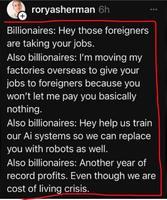

0


Friday the Open Source Initiative welcomed the EU's new tech sovereignty package, noting that "over a third of the 29-page document is devoted to Open Source."
The nonprofit OSI — maintainers of the Open Source definition — submitted their official feedback in February, and notes that "many" of their key requests were addressed, "as well as some exciting new announcements!"
One of the biggest barriers to Open Source adoption has been public procurement. Too often, tenders have been designed around proprietary solutions, ignoring the benefits of Open Source and locking public institutions into closed ecosystems. The OSI called for procurement rules that prioritize interoperability, reusability, and vendor independence. The package takes a major step forward in this area. The EU pledges to make the public sector an anchor consumer for Open Source solutions. The Commission plans to reform procurement rules to remove barriers for Open Source, provide better guidance to EU countries on procurement criteria to avoid excluding Open Source, and uphold the "public money, public code" principle when procuring software development. Both proposals align with the OSI's feedback. The next critical step is the EU's public procurement law reform. The OSI will continue advocating to ensure these pledges translate into action.
Beyond procurement, the OSI highlighted challenges faced by Open Source communities in Europe, particularly difficulties accessing investment and expertise to commercialize and scale projects. The Commission has responded by committing to ensure Open Source companies are considered for funding under the European Competitiveness Fund (ECF). It also plans to create "Open Source business accelerators" that will offer mentorship, training, legal and licensing consulting, and business development support, including marketing. Additionally, the Commission will work to raise industry awareness of Open Source solutions by leveraging the EU's existing business support networks. These measures directly address the OSI's concerns and could significantly boost the Open Source ecosystem in Europe...
[I]n our feedback, we called for the continuation of the Next Generation Internet (NGI) initiative that has funded many Open Source projects, and for the creation of a European Sovereign Tech Fund to fund ongoing maintenance and features development to meet the EU's needs. We also highlighted the need to mainstream Open Source in other funding opportunities (like the €100bn+ Horizon Europe programme). The Commission's strategy addresses these requests. The NGI will be scaled up under the new name "Open Internet Stack." A new Open Source Maintenance Instrument will fund the "maintenance and security upkeep of essential components." The Commission will also create a list of critical and security-relevant Open Source dependencies to inform funding decisions and promote Open Source solutions as the default approach in Horizon Europe funding.
Friday's announcement from the Open Source Initiative notes that the EU is already leading by example in Open Source adoption. It applauds the EU for "deploying a Matrix-based communications system and the openDesk collaboration environment internally, trialing an alternative operating system to replace Windows, which is currently widely used in EU institutions, and expanding its presence on the Fediverse, with Commissioners and key departments already joining the EU's Mastodon server.'
Read more of this story at Slashdot.
The Root reports:
A New Mexico jury has found the Gila Regional Medical Center negligent in the death of Nichelle Nichols, who famously played Lieutenant Nyota Uhura on the hit television series "Star Trek."
According to KRQE News 13, Nichols' family filed a lawsuit against the hospital last year following her 2022 admission for shortness of breath. Nichols' family claimed that she should have received a full cardiac examination, but the medical personnel sent her to the observation unit, and she was discharged the next day. After being transported to her assisted living home, the 89-year-old passed away just seven hours later.
In response to Nichol's tragic passing, the lawsuit alleged that Gila Medical Center "hired, credentialed, and inappropriately supervised unqualified medical providers" who treated the actress. The lawsuit also alleged that the hospital failed to secure a bed for Nichols or transfer her to a facility that had one. Furthermore, the attorney argued that the staff should have known that the assisted living center was not equipped to handle a patient with her medical needs.
On Thursday (June 4), a jury found the hospital negligent and awarded Nichols' estate $13 million.
KRQE got this quote from the estate's attorney about the death of the 89-year-old acctress. "At the end of the day, Nichelle Nichols had a heart attack that was missed. Thatâ(TM)s why she died." The jury deliberated for "just two hours."
Read more of this story at Slashdot.
An official trailer dropped this week for Tomb Raider: Legacy of Atlantis. It's "a full-blown remake of the original 1996 Tomb Raider game," reports Kotaku, "rebuilt from the ground up using Unreal Engine 5." Developed by Flying Wild Hog (with assistance/guidance from longtime Tomb Raider studio Crystal Dynamics), "it will also make some changes to puzzles, combat, platforming..." The game's Steam page acknowledges that AI-assisted tools were used during development "to support some early exploration and temporary development content," but that any AI-assisted assets were "either replaced or refined by humans in order to maintain the creative and artistic vision of the development team." In a statement to Eurogamer, Crystal Dynamics clarifies that they "leverage" AI tools "to help our teams iterate on ideas faster and more efficiently, while ensuring that all finished content in the final product is human-crafted." (But are they considering AI-assisted assets "refined" by humans as "human-crafted"?)
Polygon reports that "The early response to the news has been mixed to negative on the Tomb Raider subreddit, ranging from vague hopes that the generative-AI craze will simply go away to grim resignation that this is the future of game development." Beyond labor concerns, art theft worries, and environmental issues, the most straightforward reason AI art has been unpopular is that many players find it hideous. We'll find out for sure whether Tomb Raider: Legacy of Atlantis' use of AI is particularly blatant when it comes out in February 2027. Its release date is February 12, 2027 on PS5, Xbox Series X/S, Switch 2, and PC.
Read more of this story at Slashdot.
Utah residents and a progressive nonprofit are suing officials over Kevin O'Leary's planned Stratos Project AI data center, arguing that the special authority overseeing it gives unelected officials too much control over land use, taxation, public health, and local governance. The lawsuit comes as O'Leary has agreed to shrink the proposed 40,000-acre project by 75% amid mounting political and community pushback. NBC News reports: The lawsuit was filed Wednesday in Utah's 3rd District Court by the Alliance for a Better Utah and the group of anonymous residents. The plaintiffs hope to challenge the constitutionality of the Military Installation Development Authority (MIDA) -- a special entity that oversees the data center's proposal -- and its approval of the project, a spokesperson for the nonprofit said. Attorney David Irvine, who is representing the plaintiffs, alleges that MIDA is exercising powers as an unelected body that "the Utah Constitution never authorized." "Under the Stratos plan, it would hold permanent, irrevocable control over public health, safety, taxation, and land use across tens of thousands of acres of Box Elder County, with no voter recourse," he said in a statement.
The lawsuit alleges that allowing MIDA to oversee the data center's development "irrevocably" cuts off Box Elder County citizens' rights by not allowing sufficient public input in the project. "The Stratos Project Area Plan, and actions taken by MIDA and the Commission to enact the same, puts lawmaking power respecting questions of public health, safety, welfare, morals, taxation, zoning, land use, and the like, in relation to a significant swath of county territory in a non-elected MIDA Board," the complaint reads.
In addition to MIDA and the Box Elder County Commission, the lawsuit names Utah Senate President J. Stuart Adams and state Sen. Jerry Stevenson, who also serve as MIDA board members. Irvine said Adams and Stevenson's presence on the MIDA board as active legislators "appears to violate the prohibition on holding more than one office of public trust simultaneously," and claimed this should render the data center's approval "null and void."
Read more of this story at Slashdot.
After 50 years of searching, astronomers say they have finally found evidence of a long-sought "wind" blowing from Sagittarius A*, the supermassive black hole at the center of the Milky Way. "Unless a black hole exists in a perfect vacuum, it must blow a wind somehow. And there is no perfect vacuum in the universe," team co-leader and Northwestern University researcher Mark Gorski said in a statement. "With new observations, this is the first time we've had a clean enough view to see the wind's imprint. We looked at the data and said, 'There it is. There is the thing that everybody's been looking for for 50 years.'" Space.com reports: Scientists have been aware for some time that feeding black holes launch powerful outflows of material around them, including jets and winds. Winds are caused when matter falling to the black hole is accelerated to near light-speed, generating pressure that pushes infalling material away. That has been seen with ravenously feeding black holes before, but not the barely feeding Sgr A*. Its sparse consumption of material and the fact it is obscured by the plane of the Milky Way from our vantage point have made tracing this wind difficult.
Gorski's Northwestern colleague and team co-leader Lena Murchikova pointed out that the scientists were the first to detect molecular gas very close to Sgr A* feeding the supermassive black hole. That makes Sgr A* reassuringly like other supermassive black holes. "The wind is not powerful, and its direction probably wanders with time. It shows that our black hole is not unique, and our place in the universe is not unique," Murchikova added. "To observe our own black hole, we have to look through the plane of our galaxy. That means we have to peer through gas, dust and ionized structures, and you can't really see through all of that easily."
While the team's results confirm that Sgr A* is extremely quiet compared to the supermassive black holes that sit in bright, turbulent regions of other galaxies called active galactic nuclei (AGN), this black hole wind is no slouch. In fact, the scientists think that it has been raging for around 20,000 years. "The majority of other galaxies spend most of their lives in a state where they are not particularly active," Murchikova said. "But we can only see them when they are in a fireworks stage. It is very attractive to study black holes when they are in the fireworks stage, but that's not actually their dominant state. "Sgr A* finally gives us a window into the life of a black hole in this quiet state."
The team's research was published in The Astrophysical Journal Letters.
Read more of this story at Slashdot.
An anonymous reader quotes a report from Ars Technica: Just over a year ago, the Trump Administration issued an executive order meant to accelerate the development of nuclear power in the US. While an entire startup ecosystem has developed around the use of different -- and typically smaller -- reactor designs, only one of them has been fully licensed so far, and there are no plans to actually build any instances of that design.
The executive order directed the Department of Energy to have three different reactor designs reach criticality in a bit over a year. On Thursday, a startup called Antares announced that a test reactor it had placed at the Idaho National Laboratory had reached criticality, making it the first new design to cross this threshold. Criticality means that the nuclear reactions inside the hardware had become self sustaining; it does not mean the reactor had started to generate power. [...]
At the moment, Antares is just testing what it calls a Mark 0 reactor, which is not connected to the power-generation portion. Instead, it's being used to validate the company's modeling of the physical conditions in its reactors and generate safety data that can be used during licensing applications. Attempts to run the entire system, including electrical generation, are expected to happen next year. While the work was done at a Department of Energy Lab, the company is working with the Department of Defense's Project Pele program for developing a mobile nuclear reactor. The company has also received support from NASA.
Read more of this story at Slashdot.
A security researcher says evidence suggests the U.S. military has been using an obscure GPS message field for nearly 20 years to broadcast encrypted key-distribution data, effectively turning GPS satellites into a global "numbers station." The hidden-looking 176-bit messages appear tied to the Pentagon's Over-the-Air Distribution system for remotely updating cryptographic keys, meaning ordinary GPS receivers may have been receiving the traffic all along without anyone outside the military noticing. The findings have been detailed by Steven Murdoch, an information security expert, in a new article in Inside GNSS. 404 Media reports: [...] From the beginning, he suspected that the subframe field contained encrypted transmissions because the data was so random. "Random data is actually very unusual to get in nature," Murdoch said. "If you see it, either it's been carefully designed to be random -- but then, why is someone sending out random data? -- or it's encrypted data. I thought encrypted data is by far the most likely explanation." He returned to the subframe on and off over the years, and solicited guesses about its content on Stack Exchange in 2023. Ahmed Kamruddin, a master's student at UCL, developed the project further in 2025. Then, this year, Murdoch put the last pieces of the puzzle together over several weeks by analyzing open archive Global Navigation Satellite System (GNSS) recordings collected since 2007 and kept by GFZ Helmholtz Centre for Geosciences.
This dataset included more than 12 million observations of Subframe 4, Page 17, yielding 3,994 unique 176-bit messages. Within this corpus, Murdoch pinpointed key-repeating "sentinels" including a pattern that appeared in February 2010 and was broadcast on and off across dozens of satellites for more than a decade. Murdoch discovered that this particular sentinel was transmitted by all 31 operational satellites within a window of a few hours on May 26, 2011, potentially heralding the activation of a new operational system. He confirmed that this timeline coincided with the rollout of the military's Over-the-Air Distribution (OTAD) and the Over-the-Air Rekeying (OTAR) by cross-referencing declassified documents, including a 2015 presentation about the dates of the operation.
"There was a perfect match between the timeline and that presentation and the change points that were automatically identified from the data," Murdoch said. "That was the smoking gun that made me think: This is what it's for." These automated systems replaced the cumbersome manual distribution of cryptographic keying material, allowing military GPS receivers around the world to be rekeyed remotely through satellite broadcasts rather than through onsite procedures. For the next 11 years, this expansive rekeying operation was overlooked in public GPS data. In 2022, the system entered a new phase, according to Murdoch's analysis. The shift was characterized by a slowing in the message rotation rate. Later, in December 2023, broadcasts carrying a distinctive "TEXT" prefix emerged then gradually spread across the constellation.
Murdoch isn't sure what explains the recent transition, though it could be a possible modernization of the infrastructure or the introduction of a new protocol. But to him, the bigger takeaway is that the signals were always available for anyone willing to take a closer look, a discovery that suggests that there could be more revelations hidden for the cryptographically curious among us. "Every receiver in the world decodes Subframe 4, Page 17," Murdoch said in his new article. "Almost none of them have ever looked at it. The lesson generalizes: There is more to learn from the bytes already arriving at our antennas than from the bytes we wish were specified differently. The data are publicly available. The signal is overhead, twice a day, every day."
Read more of this story at Slashdot.
Ahead of its upcoming IPO, SpaceX announced that Google will pay the company $920 million per month for access to roughly 110,000 Nvidia GPUs and related compute infrastructure. Google says the agreement is short-term "bridge capacity" to meet stronger-than-expected demand for Gemini Enterprise, while SpaceX is using deals like this and its Anthropic contract to bolster its pitch for a historic public offering. TechCrunch reports: The deal is similar in length and scope to the one SpaceX announced with Anthropic in late May. As part of that deal, Anthropic agreed to pay SpaceX $1.25 billion per month through 2029 to rent all the available compute from its Colossus 1 data center near Memphis, Tennessee that xAI -- now part of SpaceX -- originally built for its own artificial intelligence efforts.
Google's deal appears to be paying for roughly half the amount of compute that Anthropic has access to at Colossus 1. SpaceX didn't say which specific data center Google would be using. CEO Elon Musk has previously suggested his company would reserve the Colossus 2 data center for xAI. Anthropic was significantly limited in its compute capacity prior to its deal with SpaceX, raising usage limits on the same day the deal was announced. Google is in a very different position, with some estimates naming it as the world's largest single owner of AI compute.
[...] Also like the Anthropic deal, the agreement with Google includes a cancellation clause. Both SpaceX and Google have the option to terminate the agreement with 90 days notice after December 31, 2026. Google's access to the data center will ramp up "through September at a reduced fee," according to the filing. "If we fail to deliver access to the committed amount of GPUs by September 30, 2026, then following a one-month grace period, Google may immediately terminate the agreement or accept the number of GPUs provided" with a reduction in the monthly fees, it reads.
Read more of this story at Slashdot.
The Ladybird browser isn't opposed to AI coding tools, but it's just brought a new change to their code-contributing policies.
February 23: "Ladybird adopts Rust, with help from AI."
Our first target was LibJS , Ladybirdâ(TM)s JavaScript engine... I used Claude Code and Codex for the translation. This was human-directed, not autonomous code generation. I decided what to port, in what order, and what the Rust code should look like. It was hundreds of small prompts, steering the agents where things needed to go... The requirement from the start was byte-for-byte identical output from both pipelines. The result was about 25,000 lines of Rust, and the entire port took about two weeks. The same work would have taken me multiple months to do by hand.
June 5 (Friday):
We will no longer accept public pull requests... A pull request no longer tells us as much as it used to about the person submitting it. A substantial patch used to imply substantial effort, and that effort was a reasonable proxy for good faith. That assumption no longer holds....
We have already seen patient, well-resourced campaigns in open source to earn maintainer trust and abuse it. What has changed is how much faster and cheaper it has become to produce work that looks like a serious contribution... Whether code was typed by hand is beside the point. What matters is who is responsible for it once it enters the browser. Ladybird is becoming a browser for real users. The people introducing changes to it must be the people who decide those changes belong in the project, and who will answer for the consequences.
As part of this change, we will close all currently open public pull requests. We are grateful for the work people put into them, but keeping the existing queue open would keep that contribution path open in practice. There is no perfect time to make this change, so we are making it now. Going forward, pull requests will only be available to project maintainers. There will not be a separate process for submitting patches by other means. We do not want to create a shadow contribution system through issues, comments, email, or forks...
Outside involvement still matters: clear bug reports, reductions, website testing, standards discussion, design discussion, security reports, and technical feedback all help move the project forward. This is the right change for Ladybird now. We are preparing to ship a browser to real users, and our development process has to match that responsibility.
Read more of this story at Slashdot.
From Android Authority:
Singapore-based BMX has announced that its SolidSafe magnetic power bank lineup, first showcased at CES 2026, is now available for purchase through its website and Amazon US, with prices starting at $59. What sets these power banks apart is their use of semi-solid-state batteries. Traditional lithium-ion and lithium-polymer batteries rely on liquid electrolytes to move energy between electrodes. Semi-solid-state batteries significantly reduce the amount of flammable liquid inside the cell, improving thermal stability and lowering the risk of overheating, swelling, or fire...
BMX says the power banks are designed to remain stable under extreme conditions and show greater resistance to physical damage and thermal stress than conventional battery packs. The company has also launched the SolidSafe Air, a 5,000mAh magnetic power bank that it claims is the world's thinnest semi-solid-state Qi2 power bank... BMX is positioning the device as a travel-friendly alternative for users who want added safety and the convenience of a magnetic battery pack without the bulk.
Thanks to long-time Slashdot reader destinyland for sharing the article.
Read more of this story at Slashdot.
Bluesky's chief operating officer believes teen social media bans "risk entrenching Big Tech's dominance," reports CNBC:
Rose Wang, Bluesky's chief operating officer, told CNBC on the sidelines of SXSW in London on Wednesday that the smaller open-source platform isn't opposed to regulation but that smaller players in the industry should be protected. "I support the protection and the safety of youth... The question that we have then is at what cost? Because essentially what I'm scared of is in the long term, we're headed to a world where there's about three to five platforms, and extreme heavy regulation of those platforms...
"Basically the whole compliance teams of these platforms are 10 times the size of our entire team," Wang said. "So, basically, we're living in a world where it's almost impossible for smaller entrants to come in and build healthier spaces."
The article notes Bluesky had grown to 43 million users as of March, "which is still only around 10% of X's estimated 450 million users. Bluesky has struggled to maintain popularity, and by the end of October last year, it had reportedly seen a 40% drop in daily mobile active users over the past 12 months."
Read more of this story at Slashdot.
An upcoming vote in a few weeks on America's cryptocurrency "Clarity Act" is "rattling Wall Street and consumer advocates," reports CNN, with its proposal to regulate the bulk of crypto markets through America's Commodity Futures Trading Commission. "It allows crypto companies to operate, at long last, in compliance with U.S. rules, rather than what they have been doing — essentially running their businesses within a patchwork of state and federal legal gray areas."
Even for Jamie Dimon, the banking titan who's not known to mince words, it was a surprising shot across the bow when he described a fellow financier as "full of sh*t." "No one's gonna bow down to this guy or that company," Dimon told Fox Business last week. "This guy" being Brian Armstrong, and "that company" being cryptocurrency exchange Coinbase. The Dimon-Armstrong tension isn't new, but it is boiling over publicly as the Senate inches closer to a floor vote on the crypto industry's No. 1 legislative priority, known as the Clarity Act. Dimon, a longtime crypto skeptic, broadly supports crypto regulation but takes issue with a provision in the Clarity Act that would allow companies like Coinbase to "effectively pay interest on deposits... without the protection they should have."
The spicy comment about Armstrong came after Dimon rattled off other concerns about the Clarity Act, including what he sees as its insufficient anti-money-laundering and know-your-customer safeguards that banks have had in place for decades... "If (Armstrong) takes deposits like a bank, he should have bank rules," Dimon said in the Fox Business interview... The immediate concern from banks (and many consumer advocates) is that crypto exchanges like Coinbase would, in the grand tradition of Silicon Valley innovation, lure customers in with huge rewards and then phase those benefits out over time. Deposits in a crypto exchange are also not insured by the federal government the way bank deposits are, but that's the kind of fine print that customers tend to overlook until it's too late. JPMorgan Chase spokesperson Trish Wexler underscored that the bank wants the bill to pass, with some "fixes," like prohibiting rewards on stablecoin holdings and strengthening anti-money-laundering guardrails.
Coinbase's CEO responded in an interview with Politico:
Armstrong pointed to restrictions on rewards paid to idle cryptocurrency balances and disclosures on stablecoins as part of a handful of policies included in the bill to appease the banking industry's requests. "I think it'd be good for the banks," Armstrong said of the bill. "It would be great for crypto companies as well ... Hopefully we can get past the absolutisms and just see if we can get this bill over the finish line."
But CNN notes concerns about weaving cryptocurrency — "a historically self-contained financial system prone to stomach-churning booms and busts" — more deeply into America's traditional finance infrastructure:
"It's not just a crypto story, it's a broad deregulation of our securities markets story," Hilary Allen, a law professor at American University who specializes in banking and cryptocurrency, said in an interview. And that should concern everyone, Allen says, even if they have no investments at all, because "if we get a financial crisis in this space... no one comes out of that unscathed."
Read more of this story at Slashdot.
The University of California at Berkeley discovered the percentage of failing grades in multiple CS classes this spring "is significantly higher than past semesters," reports the campus's student newspaper.
"Instructors point to students' increased reliance on AI, lack of mathematical preparedness and understaffing as potential contributing factors."
According to [coursework platform] Berkeleytime, 35.3% of CS 10 students and 10.6% of CS 61A students received F's in spring 2026. In spring 2025 and spring 2024, the percentage of F's did not exceed 10% for either class. The electrical engineering and computer sciences department's grading guidelines state that 7% of students in lower division courses, including CS 10 and CS 61A, should receive D's and F's...
[UC Berkeley teaching professor Dan Garcia, who taught both classes] believes the "primary driver" of these abnormally high failing rates is due to a "vast increase in academic dishonesty" due to students' usage of large language models, such as Claude, ChatGPT and Google Gemini. "Some of the numbers that you saw from the number of students who receive failing grades were because we caught them (cheating) and prosecuted them and are sending their cases to the Center for Student Conduct," Garcia said. "But in other cases, it's students who are leaning a little too hard on LLMs to do their work for them, and then at exam time just really aren't ready." According to Garcia, nearly 30 students in CS 10 were "caught cheating on take-home exams" in spring 2026...
In addition to overreliance on AI, Garcia also pointed out that many students are underprepared mathematically, a concern echoed by campus associate teaching professor Gireeja Ranade. Ranade noticed a similar lack of prerequisite mathematical skills in her spring 2026 EECS 127 class, "Optimization Models in Engineering," which she described as "differently challenging" to teach this semester. The class saw a 16.8% F rate, far higher than the 5% of D's and F's that the EECS department describes as "typical" for an upper division course...
Both Garcia and Ranade have joined more than 1,300 UC faculty in signing a petition calling for the reinstatement of ACT and SAT standardized testing scores for STEM admissions in the UC system.
Thanks to long-time Slashdot reader theodp for sharing the article.
Read more of this story at Slashdot.
Sales have increased for Hyundai's under-$35,000 IONIQ 5, totalling 18,395 for the first five months of 2026, reports Electrek, "up 16% from the same period last year."
But meanwhile BYD's overseas sales surpassed 160,000 for the first time last month, "up 80% from May 2025 and 19% from the previous record of 135,098 set in April."
Through the first five months of 2026, BYD sold 616,263 vehicles overseas. In May, overseas sales accounted for over 41% of BYD's total sales. In several major markets, including the UK, BYD surpassed Tesla and Kia to become the best-selling EV brand through April. "With fuel prices remaining high, more drivers are turning to electric vehicles as a smarter and more economical choice," Bono Ge, BYD UK's Country Manager, said last month.
Elsewhere Electrek notes that Toyota's bZ (starting at under $35,000) was the third-best-selling EV in the U.S. in the first three months of 2026, behind only the Tesla Model 3 and Model Y. "Last month, bZ sales doubled from May 2025, with 2,646 units sold."
And meanwhile the first Volkswagen ID. Polo and Cupra Raval models "rolled off the production line at the Group's Martorell plant in Spain, the first of several new affordable, mass-market EVs."
Starting at €24,995 ($29,000) and €26,000 ($30,100), the ID. Polo and Cupra Raval are the first models from the Group's Electric Urban Car Family...
[T]he first customer deliveries are scheduled to begin later this summer and into the fall. Following the ID. Polo and Cupra Raval, Volkswagen will introduce new members to the Electric Urban Car Family, including the ID. Cross, an electric version of the T-Cross, later this year.
According to Volkswagen, the ID. Cross will start at around €28,000 ($32,500).
Read more of this story at Slashdot.
Scientists "have made a discovery that may help prevent some people from developing lung cancer," reports the New York Times, noting that lung cancer "kills more people worldwide than any other cancer."
A team of more than 80 researchers working across four continents have identified a set of proteins in the blood that accurately predict lung cancers more than five years before diagnosis. The scientists also found early evidence that an existing anti-inflammatory drug could significantly reduce lung cancer risk in people with elevated concentrations of these proteins, which they linked to inflammation. More research is needed before a test based on these proteins could be ready for use in patients. And scientists would still need to run a randomized trial to determine whether the drug prevents lung cancers. Still, outside experts said the findings, which were published on Thursday in the journal Cell, offer a promising starting point toward a long-held public health goal...
Led by Dr. Swanton, Dr. Tej Pandya, a Ph.D. student, and other researchers took a set of 48,000 blood samples from the UK Biobank and used machine learning to identify 14 proteins associated with the development of lung cancer. When the researchers looked at the presence of those proteins and also took into account a patient's age, smoking status and history of lung disease, they were able to predict who would develop lung cancer more accurately than the best risk assessment models currently in use...
Using mouse and cell models, the scientists showed that these proteins increased when a specific inflammatory pathway was activated. Smoking and air pollution can activate that pathway. This adds to the evidence that it isn't just genetic mutations caused by smoking, pollution or other factors that are driving lung cancers. Rather, Dr. Swanton said, the findings suggest that "smoke causes mutations and inflammation, which together cause cancer." They also found that the signature was increased in people who later developed chronic obstructive pulmonary disease and pulmonary fibrosis, pointing to a common inflammatory environment upstream of all three diseases.
Read more of this story at Slashdot.
Isabella Kwai / New York Times : How LinkedIn is transforming into a “post-cringe” social network as it courts high-profile influencers, who are building audiences on corporate-friendly topics — Celebrities and paid influencers have transformed the career-focused platform, which for some users, has become a job unto itself.
Caleb Mutua / Bloomberg : Report: in May, supply of unsecured bonds from hyperscalers hit $155B YTD, 45%+ more than 2025's total issuance; some AI-infra bond sales are 4x oversubscribed — Credit heavyweights like DoubleLine Capital LP and Oaktree Capital Management are buying debt now that can perform …
Robert Wright / Financial Times : Several UK police forces have been told to stop using AI to prepare court statements, citing concerns that inaccurate outputs could contaminate legal procedures — Safeguards must be in place before forces automate justice tasks, says head of Police.AI — A number of UK police forces …
Leo Schwartz / The Information : White House AI advisor Sriram Krishnan says he will leave his role at the end of June; sources: Krishnan plans to start a pro-Trump AI policy institution — Sriram Krishnan, a top AI policy advisor in the Trump administration, plans to leave his position at the end of June …
Financial Times : Raspberry Pi closed up 27%+ on June 5 after saying it expects adjusted EBITDA of at least $38M in H1, putting it on track to beat $42M est. for the full year — UK maker of tiny low-cost computers expects ‘robust demand’ to push unit sales above 4mn in first half
Josh Eidelson / Bloomberg : FOIA docs reveal Amazon's extensive control over delivery drivers it insists are not employees, in a case the NLRB sought to settle on terms favorable to Amazon — The feds were pushing a landmark case about Amazon's control of its contract drivers. Then the president put Amazon's former lawyer in charge.
Max Tani / Semafor : Kalshi and Polymarket sponsored X posts promoting viral LA mayoral election fraud conspiracy theories; Kalshi says it asked its paid influencers to remove posts — THE SCOOP — Kalshi on Friday asked some of its paid political influencers to remove X posts that sowed doubt about the integrity …
Elizabeth Dwoskin / Washington Post : Inside the Trump admin's push to integrate AI into the healthcare system, including an FDA regulatory fast track for digital health tech like AI chatbots — The administration is laying the groundwork for chatbots that can diagnose illness and prescribe medicine, but physicians say AI can introduce more problems.
Ramsay Hodgson / Financial Times : Paris-listed Teleperformance, the world's largest customer service company, has become one of Europe's most shorted stocks, as hedge funds bet on AI disruption — Outsourcing companies hit as investors see ‘clean’ disruption risk — Hedge funds are betting against the shares and debt …
Abhirup Roy / Reuters : Sources: Uber has committed nearly $500M to self-driving startup Nuro, providing a crucial runway as Nuro works to prove its technology at commercial scale — Uber (UBER.N) has committed close to half a billion dollars in self-driving startup Nuro, two sources directly aware of the matter told Reuters …
Ami Yamada / Nikkei Asia : Kepple: seed-stage startup funding in Japan fell 42% YoY in 2025 to a 10-year low of $124M, as the Tokyo Stock Exchange moves to reduce small listings — TOKYO — Funding in Japan for the earliest-stage startups tumbled 42% last year to a 10-year low of 19.9 billion yen ($124 million) …
Mayumi Negishi / Bloomberg : SoftBank's PayPay, Japan's dominant payments app, says it will take a 70.2% stake in T&D Financial Life Insurance for $840M, expected to close in October 2027 — SoftBank Group Corp.'s payments unit is buying the life insurance unit of T&D Holdings Inc. for ¥134.3 billion ($840 million) …
Igor Bonifacic / Engadget : OpenAI rolls out Lockdown Mode, an optional security setting designed to offer users advanced protection from prompt injection attacks by limiting some features — The company says most users don't need to use the feature. — OpenAI has begun rolling out Lockdown Mode …
Kate Conger / New York Times : Google Cloud says its SpaceX compute deal is a “short-term” agreement “to ensure we have bridge capacity to meet surging customer demand” for Gemini Enterprise — Elon Musk's rocket company said Google would pay it $920 million a month, as it prepared for its initial public offering.
Akash Girimath / Decrypt : Privacy token Zcash plunges after the disclosure of a 2022 vulnerability in its Orchard shielded pool that could have allowed undetectable ZEC counterfeiting — Zcash plunged double digits overnight after developers disclosed a critical vulnerability in the protocol's Orchard shielded pool …